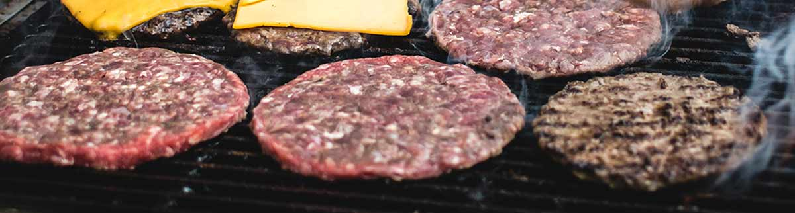

We pride ourself in our locally-sourced ingredients. Making quality food starts with quality ingredients, and we know that supporting producers is the best way to support our community.
Hintonburger is located in Hintonburg, a village that was incorporated into Ottawa in 1907.
In Hintonburg’s earliest days, the town was part of the Nepean Township and several farms lined the main road. The town took its name from Josheph Hinton, a local who contributed greatly to the community with his securing of a post office and Nepean township hall. At Hintonburger, we’re proud of our community and local history.
We only use locally-sourced beef.
We believe in supporting local farms, leading to both better tasting burgers and a better community. Our beef comes from O’Brien Farms, a local supplier only 25 minutes away.
When everyone supports local, everyone wins. We’re working to make eating local worth it, one head of lettuce at a time.
Location
1096 Wellington St West